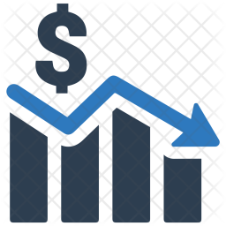

Although WICYH now has 8,000 employees in its offices around the world, it all started with one family: Thomas Nickerson and his four brothers whose parents had an agricultural trading business in Brittany. They found an interest in technology by providing farmers with computer programs to track their products and sales. Very quickly, it became clear to the brothers that a completely different type of family business could emerge thanks to the software industry.
So they started a new project with the idea that everything in your house could be connected. The five brothers begun to work on what will later be called WICYH, acronym for “Wireless Connecting Your House”. In two years, they focused on get enough funds to create little equipments to start with their business. The popularity of the products has exceeded expectations, what made the company grow really fast.
In 2019, because of COVID-19 crisis, the company was affected decreasing its profit and its share price. But they quickly recovered, in 2021, its turnover was $23.2 million.
